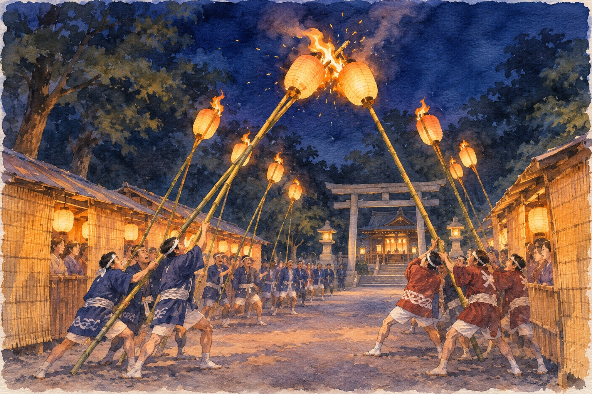

In late November a small shrine town in Tochigi lights lanterns on long bamboo poles and spends the evening smashing them out. Next door in Ibaraki, a bigger, better-known version of the same fight takes place a week later. This one is the original.
If you have been to a Tokyo tori-no-ichi in November, you know what a crowd looks like when it is excited and cold. This is a smaller, darker, more local evening, in the town of Nogi (野木町, Nogi-machi) on the JR Utsunomiya Line, just over the line from Koga in Ibaraki. English-language listings give it two lines. I could find no English account of how it works or why.
The trade-off is plain. There is no tour desk, no stand for foreigners, and I found no bus. In return you see the festival in the form a village would recognise, and you can see the next one in Koga, Ibaraki, the following week.
A shrine with seven villages野木神社 · Nogi Jinja, 七郷 · shichigō
Nogi Shrine (野木神社, Nogi Jinja) sits at Nogi 2404, and in the old system it ranked as a village shrine of the upper class (gōsha, 郷社). For centuries its sacred land covered seven villages: Hazamada, Samukawa, Nakazato, Kagami, Obukuro-Ioka, Ajito and Shimo-Kawarada (迫間田, 寒川, 中里, 鏡, 小袋・井岡, 網戸, 下河原田). The Koga city tourist association tells it this way: when Oyama Tomomasa holed up in the shrine and defeated the rebel Minamoto no Yoshihiro, Yoritomo's uncle, Yoritomo credited the shrine's protection and set the seven villages as its land.
That is where the name of the ritual comes from. The festival was a procession, the shichigō-meguri (七郷巡り), the Seven-Village Circuit. The deity's spirit, carried on a halberd (hoko, 鉾) by priests riding five decorated horses, left the shrine at the end of the old tenth month and toured the seven villages. It came home early in the eleventh month. The day it left was oide (御出), the day it returned okaeri (御帰り).
Seven parishes, one shrine in the middle; the ring shows who belongs, not where the villages lie on a map.
How a procession became a fight裸もみ · hadaka-momi, 提灯もみ · chōchin-momi
The shrine's own account, as printed on Tochigi's event page, says each village chose young men who purified themselves and joined the procession carrying tall lanterns. They are described as naked, which is why the older name is hadaka-momi (裸もみ), "naked pushing". At each village boundary they shoved against each other to be the first to bring the deity home. Over time the lanterns went onto long bamboo poles, and the clash moved to the return trip. The shrine dates the tradition to the Kennin era, 1201 to 1204, which is the shrine's claim, not something I could check against another source.
Today it is a parish contest on one Saturday night, the last of November. Each neighbourhood puts up a hut of reed screens (yoshizu, よしず) along the approach to the shrine, and inside, people eat amazake and nishime, a simmered vegetable dish. On the path, teams light lanterns on bamboo poles and bump them against each other until the flames go out. On the shrine's stage a Shinto dance is performed (dai-dai kagura, 太々神楽).
Arrive for the dance at 17:30 and you have an hour and a half to find a hut and a cup of amazake before the lanterns.

AI-generated illustration — not an on-site photograph. An imagined scene inspired by this section, not an accurate depiction of the real place, objects or event.
Getting to Nogi, and what to expect野木神社 · Nogi Jinja
Nogi Station (野木駅) is on the JR Utsunomiya Line. The west exit has a taxi rank, and a taxi to the shrine takes about 10 minutes, roughly 3.5 km according to a local tourist listing. From Koga Station (古河駅) in Ibaraki, a taxi is listed as about 7 minutes. I found no bus and no walking time, so a taxi is the plan. Arrange the return before you go; I would not count on finding a taxi at 21:00.
The event listing says viewing is free and mentions a car park of about 50 to 60 spaces. The shrine's number is 0280-55-0208.
Getting there: Tokyo → JR Utsunomiya Line to Nogi Station (野木駅) or Koga Station (古河駅); I did not verify travel times or the last trains. Check them for the Saturday.
When: Saturday 28 November 2026, from 17:00. The lantern clash is listed at 19:00.
Reality check: Dark, outdoors in late November, no English, and the taxi is the weak link. I found no rules for spectators.
To the taxi from Nogi Station: 野木神社までお願いします (Nogi Jinja made onegai shimasu). To book the return: 帰りも迎えに来てもらえますか (kaeri mo mukae ni kite moraemasu ka).
Seven days later: the copy that got famous古河提灯竿もみまつり · Koga Chōchin Saomomi Matsuri
Over the prefectural line in Koga (古河市, Koga-shi), Ibaraki, there is a bigger festival of the same kind. The Koga City tourist association says it began when townspeople on the old Nikkō Highway met the Nogi priest, who was returning from the circuit in the small hours of 3 December, and rubbed against each other to keep warm. They shouted 今夜べぇだ (kon'ya bē da), "only tonight". After the abolition of the domains in the early Meiji period, the area was split between Tochigi and Ibaraki, and the custom developed in Koga as its own festival.
Koga has the arena and the stands; Nogi has the path and the huts.
Koga's 166th festival is set for Saturday 5 December 2026, per the tourist association. It is easy to reach: the venue is by Koga Station's west exit, a one-minute walk, and the association sells special seats with local sake and food, details to be announced. If you want to see both, take Nogi on the 28th for the shrine, then Koga for the show.
The honest part
Dates disagree. Some older pages, including one local listing, say the lantern event is on 3 December, the old day of the shrine's return. The current listings I found, including Tochigi's event guide, say the last Saturday of November, which is 28 November. Phone before you go, or you may stand on an empty path.
The shrine's story of the Kennin era and the naked youths is its own account. Details such as how many teams take part, whether you may stand on the path, and whether it stops in rain are not in any source I found. If it is raining or the taxis are gone, this is not an evening to improvise. It is a parish event, not a tourist show, so watch from the edge.
If you only have one day
Saturday 28 November, from Tokyo. Train times are not verified; check the Utsunomiya Line timetable.
Reach Koga Station on the JR Utsunomiya Line from Tokyo or Ueno (I did not verify the trains). Eat early and look at the taxi rank.
Taxi to Nogi Shrine, about 7 minutes. Ask the driver to come back at 21:00, or ask the shrine office.
Watch the kagura. Walk the path and see the huts being used.
The lantern clash. Stay at the side of the path.
Taxi to Koga Station and take the train home.
Short of time? Skip the kagura and arrive at 18:45.